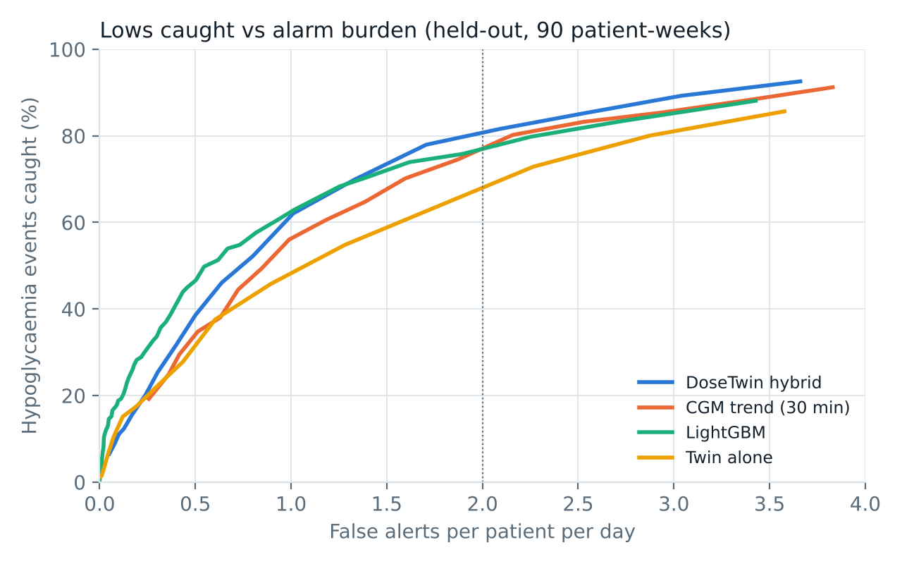

At ≤ 2 false alerts a day, DoseTwin caught 80% of lows with a median 26 min warning.
CGM trend line: 71%. LightGBM trained on 30 patients: 73%.
LightGBM wins at ≤ 1 alert a day and warns earlier. The twin alone lost to the trend line; the hybrid beats both.